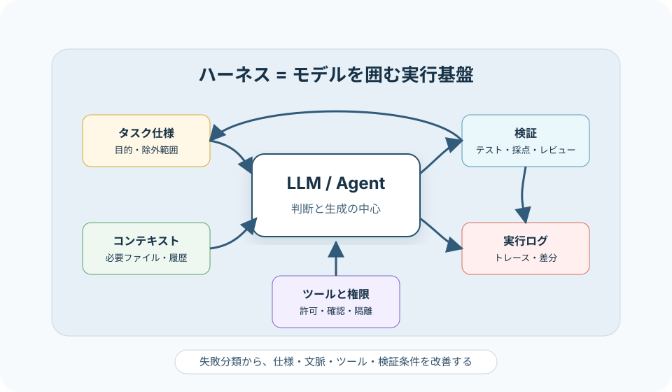

AI Agent / 検証設計
ハーネスエンジニアリングは何に使うのか
ハーネスエンジニアリングは、AIエージェントを「モデル単体」ではなく、指示、文脈、ツール、権限、ログ、検証、停止条件を含む実行基盤として設計する考え方です。フル自動化を急ぐためではなく、人間が任せられる範囲を段階的に広げるために使います。
簡潔なQ&A
- Q. ハーネスエンジニアリングとは何ですか？
- A. AIエージェントが作業するときの「足場」を作ることです。プロンプトだけでなく、コンテキスト選択、ツール、権限、ログ、評価データ、検証手順まで含めて設計します。
- Q. 使い所はどこですか？
- A. コード修正、調査、テスト生成、チケット分類、レビュー補助、定型運用など、作業の正誤を後から検証でき、部分的に自動化したい領域に向いています。
- Q. フルにエージェント任せにする前でも意味がありますか？
- A. あります。むしろ初期段階では、人間が判断するためのログ、差分、再現手順、テスト結果を残す仕組みとして有用です。
- Q. 検証過程はどう設計しますか？
- A. 期待結果を明文化し、代表ケースと失敗ケースを集め、エージェントの実行ログを保存し、テスト・採点基準・人間レビューで合否を判定します。失敗は「モデルが弱い」だけでなく、文脈、ツール、権限、検証条件のどこで崩れたかに分解します。

言葉の位置づけ
ハーネスという言葉は、テストハーネスのように「対象を動かし、観測し、判定するための外側の仕組み」を指す文脈で使われます。AIエージェント文脈では、モデルがプロジェクトを観察し、ツールを使い、結果を受け取り、完了を判断するための実行基盤を指す言葉として使われ始めています。
2026年の研究では、AI Harness Engineeringを、モデル・ハーネス・環境の組み合わせでソフトウェアエージェントの能力を捉える考え方として扱っています。ただし、これはまだ定着済みの標準用語というより、エージェント実装の実務課題に名前を与えようとしている段階の用語です。
プロンプトエンジニアリングとの違い
| 観点 | プロンプト中心 | ハーネス中心 |
|---|---|---|
| 主な対象 | モデルへの指示文 | 作業全体の実行基盤 |
| 改善対象 | 言い回し、例、出力形式 | 文脈選択、ツール、権限、ログ、検証、停止条件 |
| 失敗分析 | 指示が曖昧だったかを見る | 必要情報、ツール結果、環境状態、テスト、レビューまで見る |
| 向く段階 | 単発タスク、出力品質の調整 | 反復作業、チーム運用、検証可能な自動化 |
使い所
1. コード修正を任せる前の調査・検証
いきなり「修正して」と任せるのではなく、まず再現手順を作る、関連ファイルを読む、失敗するテストを確認する、変更計画を出す、という流れをハーネスにします。人間は計画と根拠を見てから実装を許可できます。
2. レビューやQAの補助
PRの差分、仕様、既存テスト、リスク観点を渡し、チェックリストに沿ってレビューさせます。この場合の価値は「完璧な判断者」ではなく、人間が見落としやすい観点を構造化して出すことです。最終判断は人間が持つ方が現実的です。
3. 定型業務の半自動化
チケット分類、FAQ下書き、障害ログの一次整理、ドキュメント更新候補の作成などは、期待出力を定義しやすく、採点データも作りやすい領域です。小さく始めるなら、実行結果を自動反映せず、人間承認で反映する形が扱いやすいです。
4. エージェント製品・社内ツールの運用
エージェントをチームで使う場合、誰が何を許可したか、どのコマンドが走ったか、なぜ失敗したか、どのテストで合格したかを残す必要があります。これはモデル選定よりも運用設計の問題です。
フル自動化が時期尚早に見える理由
その感覚は妥当です。現在の実務では、エージェントが長い作業を進められる場面は増えていますが、失敗時の原因が「モデル能力」「与えた文脈」「ツールの設計」「権限」「検証の弱さ」のどれなのかを切り分ける必要があります。ここを飛ばして完全自動化すると、たまたま成功したケースと再現性のある能力を区別しにくくなります。
したがって、ハーネスエンジニアリングは「人間を外す技術」ではなく、「どこまでなら任せてよいかを測る技術」と考える方が実務的です。
検証過程の作り方
ステップ1: 作業単位を小さく切る
「アプリを改善する」では広すぎます。「ログインフォームのバリデーションを仕様どおりに直し、既存テストを通す」のように、入力、期待成果物、対象範囲、除外範囲を決めます。
ステップ2: 期待結果を機械判定できる形に寄せる
コードならユニットテスト、型チェック、lint、E2E、スクリーンショット確認を使います。分類や要約なら、正解ラベル、採点基準、許容例、禁止例を用意します。OpenAI Evalsのような仕組みでは、評価データのスキーマと採点基準を分けて定義します。
ステップ3: 実行ログを保存する
成功・失敗だけでなく、どの文脈を読んだか、どのツールを呼んだか、どのコマンドが失敗したか、どの判断で方針転換したかを残します。Agents SDKのトレースや、CLIのコマンドログ、テストログは、後から失敗を分類する材料になります。
ステップ4: 失敗を分類する
| 失敗分類 | 例 | ハーネス側の改善 |
|---|---|---|
| 仕様不明 | 要件が曖昧で勝手に補完した | 事前質問、仕様テンプレート、除外範囲を追加する |
| 文脈不足 | 関連ファイルや既存ルールを読んでいない | 探索手順、参照必須ファイル、検索クエリを定義する |
| ツール誤用 | 不適切なコマンドや危険な操作をした | 権限境界、allowlist、サンドボックス、確認ゲートを入れる |
| 検証不足 | テスト未実行のまま完了扱いにした | 完了条件にテスト・ログ・画面確認を必須化する |
| 採点ずれ | 見た目は良いが要件を満たしていない | 評価データ、採点基準、人間レビュー観点を見直す |
ステップ5: 権限を段階化する
最初は読み取りと提案だけ、次にローカル編集とテスト、次にPR作成、最後に限定された本番操作、というように広げます。危険な操作、課金、外部送信、データ削除は、人間承認を残すべきです。
導入の現実的な順番
- 人間が普段使うチェックリストを文章化する。
- 代表タスクを10から30件ほど集め、成功条件を決める。
- 読み取り専用でエージェントに調査・計画・レビューをさせる。
- ローカル環境だけで編集とテストを許可する。
- ログを見て、失敗分類ごとにハーネスを直す。
- 成功率、手戻り、レビュー時間、危険操作の発生有無を測る。
要点
ハーネスエンジニアリングの使い所は、AIエージェントを完全自律にすることではなく、任せる範囲、観測するログ、許可する操作、合否判定を設計することです。検証可能な小さな仕事から始め、失敗を分類し、ハーネスを直す流れが現実的です。